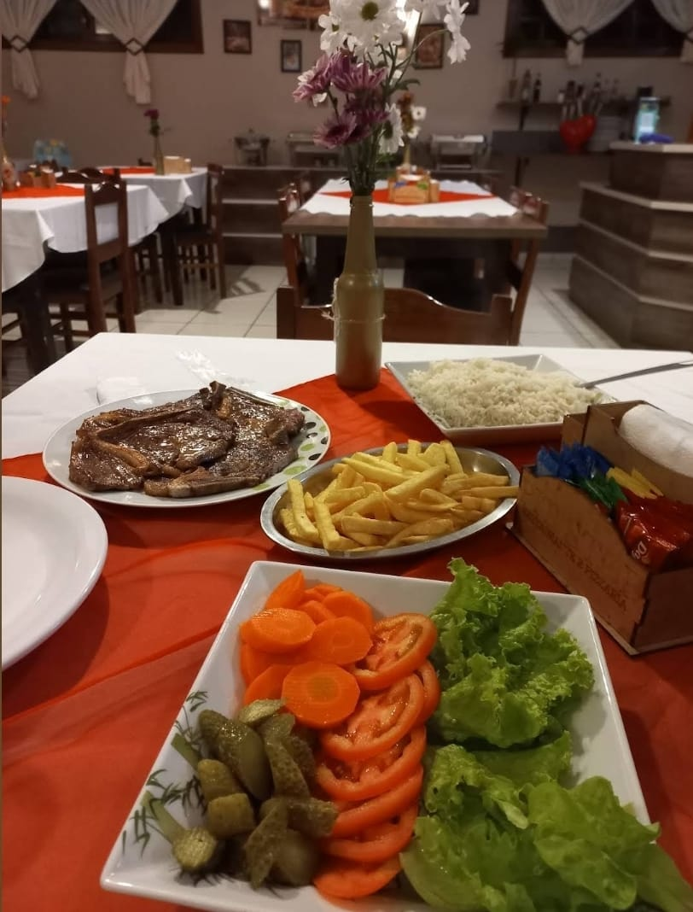
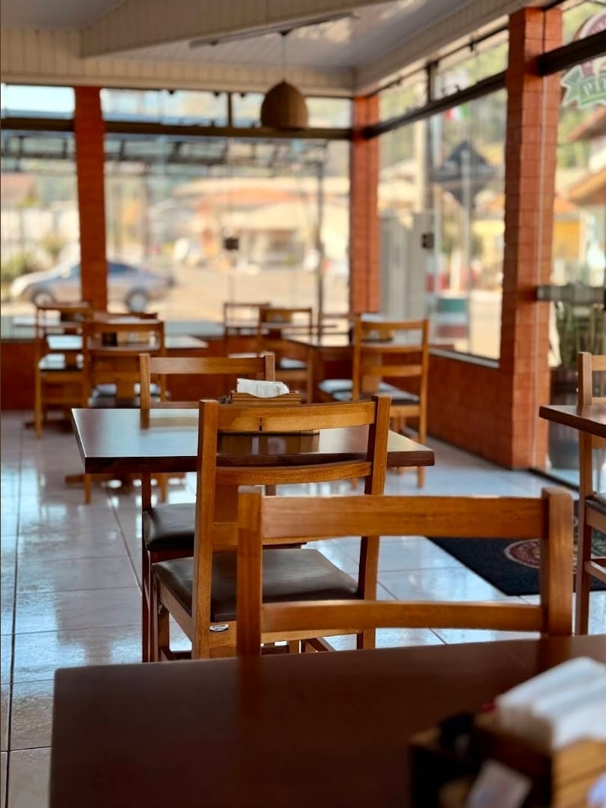

Mais de 15 anos na estrada
O Pit Stop é um negócio de família que recebe a cidade e quem passa por ela com pratos típicos caseiros, lanches e pizzas generosas no recheio. Aqui você para, come bem e segue viagem com calma.
Cardápio
Pizzas
Massa fina e bem recheada. Sabores salgados e doces.
Lanches
Lanches feitos na hora para comer aqui ou levar.
Pratos caseiros
Comida típica da região, no capricho de casa.
Cardápio completo e preços: ligue para (49) 3535-1700.
Fotos



Venha ou ligue
Horário
Todos os dias, das 9h30 à meia-noite.
Endereço
Rua XV de Novembro, 595, Centro
Arroio Trinta - SC
Abrir no mapa
Contato
(49) 3535-1700
Aceitamos cartões de crédito.
Instagram